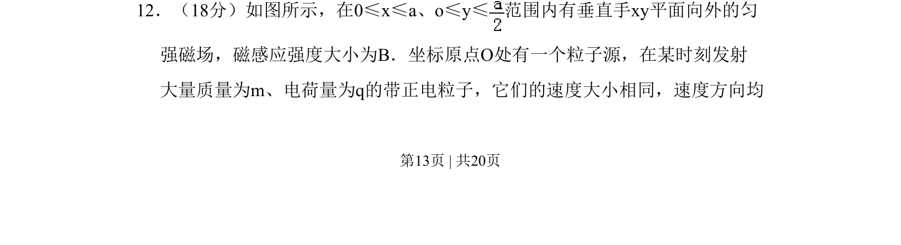
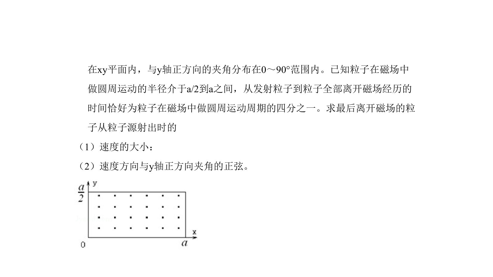
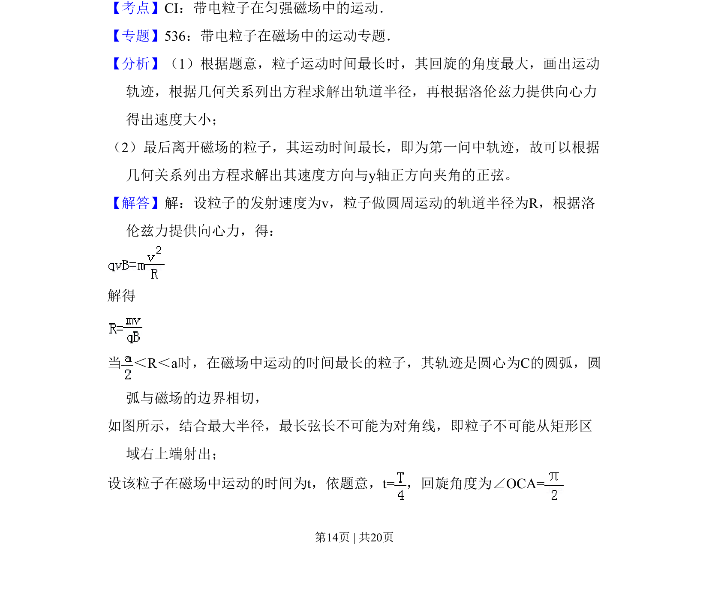
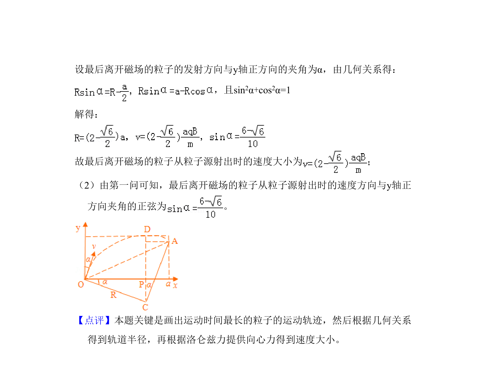

考点：带电粒子在磁场中的运动 洛伦兹力 几何临界条件 圆周运动
带电粒子在磁场中的运动
洛伦兹力
几何临界条件
圆周运动


带电粒子在磁场中偏转，考查大量相同速率不同方向粒子在磁场区域内的临界轨迹与范围。


📄 原 PDF 第 13 页：素材/真题/吉林/2008-2024·（吉林）物理高考真题/2010年高考物理试卷（新课标Ⅰ）（解析卷）.pdf
素材/真题/吉林/2008-2024·（吉林）物理高考真题/2010年高考物理试卷（新课标Ⅰ）（解析卷）.pdf